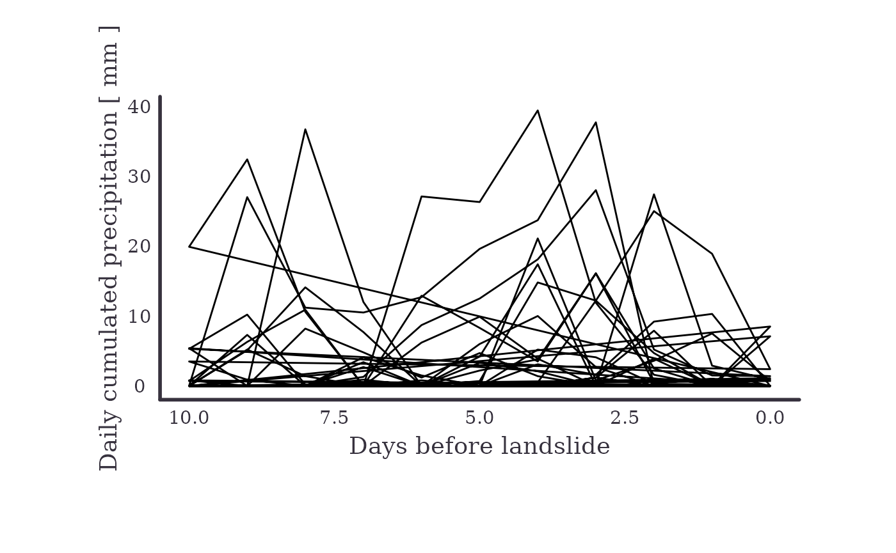

diff_data.Rmd
library(ggplot2)
library(purrr)
library(sf)
#> Linking to GEOS 3.8.0, GDAL 3.0.4, PROJ 7.0.0
library(rainfallR)Many times one wants to extract the rainfall for landslide locations (or non-landslide locations) that might not come from the IFFI database
The rainfallR pacakge was build only having the IFFI data in mind, so there are some quirks that I’ll show here
First, lets create some data
# get the shape of ST
st = iffitoR::get_shape_southtyrol() %>% st_transform(crs=32632)
# Get some random points
bb = st_bbox(st)
xs = sample(seq(bb[[1]], bb[[3]], length.out=100), 50)
ys = sample(seq(bb[[2]], bb[[4]], length.out=100), 50)
pts = map2_df(xs, ys, ~data.frame(x = .x, y=.y)) %>%
st_as_sf(coords = c("x", "y"), crs=32632)
pts_st = pts[st, ]
# make up some dates
pts_st[["date"]] = sample(seq(as.Date("2000-01-01"), as.Date("2020-01-01"), by="day"), nrow(pts_st))Now that we have some data, lets query the rainfall
r_data = get_rainfall_point_data(
pts_st,
days_back = 10,
daily_thresh = 1.1,
n_dry = 2,
ncores = 2,
save = T,
base_path = "~/rainfalldata"
)
#> Warning in get_rainfall_point_data(pts_st, days_back = 10, daily_thresh = 1.1, :
#> The File aready exists. Reading from disk...But uhhh, there is no column called date_info. So what does this super non-informative message mean?
In the iffi-database (actually only in the already derived product) I put a column that informs about the maximum level of date availbale as only slides with day-information should be processed…
So one (and the only for now;) solution is to add this column in the following way manually:
# as we have all day information in the synthetic dataset...
pts_st[["date_info"]] = "day"So lets try again to get the rainfall data
r_data = get_rainfall_point_data(
pts_st,
days_back = 10,
daily_thresh = 1.1,
n_dry = 2,
ncores = 2,
save = T,
base_path = "~/rainfalldata"
)
#> Warning in get_rainfall_point_data(pts_st, days_back = 10, daily_thresh = 1.1, :
#> The File aready exists. Reading from disk...
pts_st[["id"]] = 1:nrow(pts_st)
r_data = get_rainfall_point_data(
pts_st,
days_back = 10,
daily_thresh = 1.1,
n_dry = 2,
ncores = 2,
save = T,
base_path = "~/rainfalldata",
id_landslide = "id"
)
#> Warning in get_rainfall_point_data(pts_st, days_back = 10, daily_thresh = 1.1, :
#> The File aready exists. Reading from disk...Ok yet another error. Pfisshhh, what the fluck….
The problem is that the unique identifier should not contain the letters Iand D subsequently in upper or lowercase as this is kind of hardcoded into the PIFF_ID variable…
So lets give them another unique identifier
pts_st[["lll"]] = 1:nrow(pts_st)
r_data = get_rainfall_point_data(
pts_st,
days_back = 10,
daily_thresh = 1.1,
n_dry = 2,
ncores = 2,
save = T,
base_path = "~/rainfalldata",
id_landslide = "lll"
)
#> Warning in get_rainfall_point_data(pts_st, days_back = 10, daily_thresh = 1.1, :
#> The File aready exists. Reading from disk...What, no error…
print(head(r_data))
#> Simple feature collection with 6 features and 10 fields
#> geometry type: POINT
#> dimension: XY
#> bbox: xmin: 723978.9 ymin: 5164091 xmax: 723978.9 ymax: 5164091
#> CRS: +proj=utm +zone=32 +ellps=WGS84 +units=m +no_defs
#> id date.x precip cumsum days_before_event date.y lll date_info
#> 1 1 2008-06-24 2.9 2.9 10 2008-07-04 1 day
#> 2 1 2008-06-25 1.0 3.9 9 2008-07-04 1 day
#> 3 1 2008-06-26 0.0 3.9 8 2008-07-04 1 day
#> 4 1 2008-06-27 10.8 14.7 7 2008-07-04 1 day
#> 5 1 2008-06-28 3.2 17.9 6 2008-07-04 1 day
#> 6 1 2008-06-29 0.0 17.9 5 2008-07-04 1 day
#> dol event geometry
#> 1 2008-07-04 1 POINT (723978.9 5164091)
#> 2 2008-07-04 1 POINT (723978.9 5164091)
#> 3 2008-07-04 1 POINT (723978.9 5164091)
#> 4 2008-07-04 1 POINT (723978.9 5164091)
#> 5 2008-07-04 1 POINT (723978.9 5164091)
#> 6 2008-07-04 1 POINT (723978.9 5164091)So we can plot the precpitation for each of these synthetic slide locations
ggplot(r_data) +
geom_path(
aes(
x = days_before_event,
y = precip,
group = id
)
) +
scale_x_reverse() +
theme_void() +
labs(
x = "Days before landslide",
y = "Daily cumulated precipitation [ mm ]"
) +
theme(
axis.title = element_text(color="#37323e", size=14, family="Times", face="italic"),
axis.title.y = element_text(color="#37323e", size=14, family="Times", face="italic", angle=90),
axis.line.y = element_line(color="#37323e", size=1),
axis.line.x = element_line(color="#37323e", size=1),
axis.ticks = element_line(color="black"),
axis.text = element_text(color="#37323e", family="Times", face="italic", margin = margin(rep(5, 4))),
plot.margin = unit(rep(2,4), "cm"))